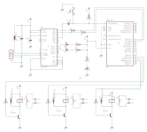
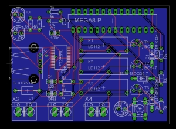
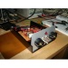
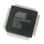
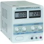
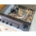
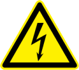

Herzlich Willkommen auf meiner Homepage!
Das Ziel meiner Homepage ist es Menschen, egal ob jung oder alt, für Technik zu begeistern und zu Experimenten und Selbstbau von eigenen Schaltungen/Geräten anzuregen, sowie sich näher mit den zugrunde liegenden technischen/naturwissenschaftlichen Fragestellungen auseinanderzusetzen. Ich hoffe mit dieser Seite etwas dazu beitragen zu können.
Was ist Elektrotechnik überhaupt? Laut Wikipedia bezeichnet die Elektrotechnik denjenigen Bereich der Physik, der sich ingenieurwissenschaftlich mit der Forschung und der technischen Entwicklung sowie der Produktionstechnik von Geräten oder Verfahren befasst, die zumindest anteilig auf elektrischer Energie beruhen. Ich beschäftige mich vor allem mit der Nachrichtentechnik, die aus der klassischen Schwachstromtechnik hervorgegangen ist, sowie mit Schaltungen aus dem modernen Gebiet der Informationstechnik.
Insbesondere die Funktechnik, also die kabellose Übertragung von Informationen, durchdringt immer mehr unsere Lebensbereiche wie der moderne Mobilfunk und sonstige digitale Übertragungssysteme. Die theoretischen Grundlagen bilden die Maxwell'schen Gleichungen. Erarbeitet von James Clerk Maxwell (1831-1879) beschreiben sie die Phänomene des Elektromagnetismus. Die Maxwell-Gleichungen bilden ein System aus partiellen Differentialgleichungen erster Ordnung, die den Zusammenhang zwischen elektrischen und magnetischen Feldern mit elektrischen Ladungen und Strom beschreiben.
Wer also das faszinierende Gebiet der Hochfrequenz- und Mikrowellentechnik verstehen will, wird um das sehr theoretische Gebiet der Elektrodynamik nicht herumkommen um zu einem größeren Verständnis zu gelangen. Für den Elektronikbastler reichen jedoch einfache elektrotechnische Kenntnisse in der Regel aus, insbesondere Personen mit Programmiererfahrung empfehle ich den Umgang mit Mikrocontrollerschaltungen, hier lässt sich mit relativ wenig Aufwand schöne Ergebnisse erzielen. Bitte beachtet jedoch, die Technik beeinflusst immer mehr unser Leben, der Techniker soll sich daher auch immer seiner Verantwortung gegenüber seinen Mitmenschen und seiner Umwelt bewusst sein, die Technik soll dem Menschen dienen und nicht umgekehrt! Passend dazu ein Zitat von Albert Einstein: "Ich fürchte mich vor dem Tag, an dem die Technologie unsere Menschlichkeit übertrifft. Auf der Welt wird es nur noch eine Generation aus Idioten geben.".
Und nun wünsche ich viel Freude und reichen Erkenntnisgewinn beim Durchstöbern der Seiten!
Letzte Änderung:
09.04.2015 - NEU: Steuern mit USB und AVR ATmega8 / 3-Kanal-Relais Karte


26.02.2015 - NEU: Modellierung und Simulation mit Matlab/Simulink
und noch viel mehr...
{kind=link}
{kind=link}
Elektrotechnik
|  > Elektronik-Projekte |  > Mikrocontroller-Projekte (AVR) | > Mikrocontroller-Projekte (ARM) |
| > Simulation mit LTspice IV |  > Labor/Equipment |  > Reparatur |
 > Vorlesungsskripte > Vorlesungsskripte |
> Links |
Funktechnik
| > CB- & Amateurfunk | > Software Defined Radio (SDR) | > Links |
Sonstiges
| > Scientific Computing & Visualization |
> Software (Freeware / OpenSource) |
| Netzspannung ist lebensgefährlich! Nur ausgebildete Elektrofachkräfte sollten mit Netzspannung arbeiten! Wie immer gelten die fünf Sicherheitsregeln! Ich übernehme keine Verantwortung für Personen- oder Sachschäden! |
 |